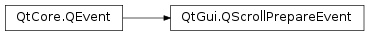

QScrollPrepareEvent¶
Synopsis¶
Functions¶
- def
contentPos() - def
contentPosRange() - def
setContentPos(pos) - def
setContentPosRange(rect) - def
setViewportSize(size) - def
startPos() - def
viewportSize()
Detailed Description¶
The
PySide2.QtGui.QScrollPrepareEventclass is sent in preparation of scrolling.The scroll prepare event is sent before scrolling (usually by
PySide2.QtWidgets.QScroller) is started. The object receiving this event should setPySide2.QtGui.QScrollPrepareEvent.viewportSize(), maxContentPos andPySide2.QtGui.QScrollPrepareEvent.contentPos(). It also should accept this event to indicate that scrolling should be started.It is not guaranteed that a
PySide2.QtGui.QScrollEventwill be sent after an acceeptedPySide2.QtGui.QScrollPrepareEvent, e.g. in a case where the maximum content position is (0,0).See also
PySide2.QtGui.QScrollEventPySide2.QtWidgets.QScroller
-
class
PySide2.QtGui.QScrollPrepareEvent(startPos)¶ Parameters: startPos – PySide2.QtCore.QPointFCreates new
PySide2.QtGui.QScrollPrepareEventThestartPosis the position of a touch or mouse event that started the scrolling.
-
PySide2.QtGui.QScrollPrepareEvent.contentPos()¶ Return type: PySide2.QtCore.QPointFReturns the current position of the content as set by
PySide2.QtGui.QScrollPrepareEvent.setContentPos().
-
PySide2.QtGui.QScrollPrepareEvent.contentPosRange()¶ Return type: PySide2.QtCore.QRectFReturns the range of coordinates for the content as set by
PySide2.QtGui.QScrollPrepareEvent.setContentPosRange().
-
PySide2.QtGui.QScrollPrepareEvent.setContentPos(pos)¶ Parameters: pos – PySide2.QtCore.QPointFSets the current content position to
pos.
-
PySide2.QtGui.QScrollPrepareEvent.setContentPosRange(rect)¶ Parameters: rect – PySide2.QtCore.QRectFSets the range of content coordinates to
rect.
-
PySide2.QtGui.QScrollPrepareEvent.setViewportSize(size)¶ Parameters: size – PySide2.QtCore.QSizeFSets the size of the area that is to be scrolled to
size.
-
PySide2.QtGui.QScrollPrepareEvent.startPos()¶ Return type: PySide2.QtCore.QPointFReturns the position of the touch or mouse event that started the scrolling.
-
PySide2.QtGui.QScrollPrepareEvent.viewportSize()¶ Return type: PySide2.QtCore.QSizeFReturns size of the area that is to be scrolled as set by
PySide2.QtGui.QScrollPrepareEvent.setViewportSize()
© 2018 The Qt Company Ltd. Documentation contributions included herein are the copyrights of their respective owners. The documentation provided herein is licensed under the terms of the GNU Free Documentation License version 1.3 as published by the Free Software Foundation. Qt and respective logos are trademarks of The Qt Company Ltd. in Finland and/or other countries worldwide. All other trademarks are property of their respective owners.